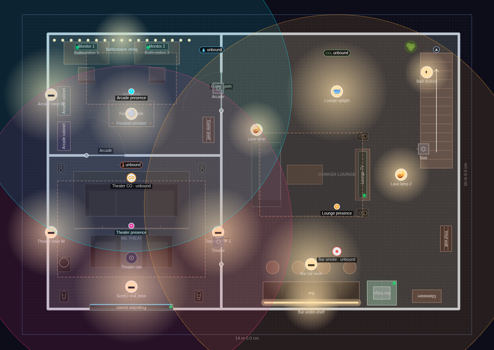
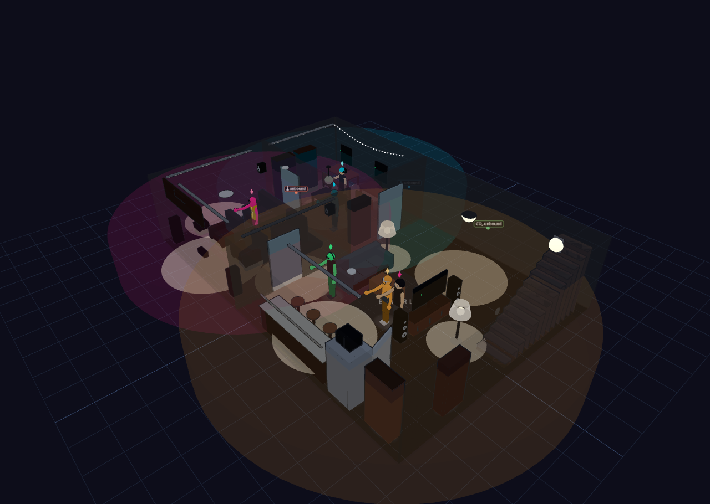
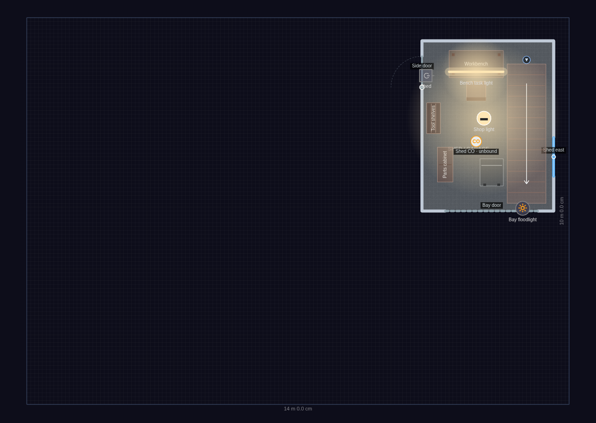
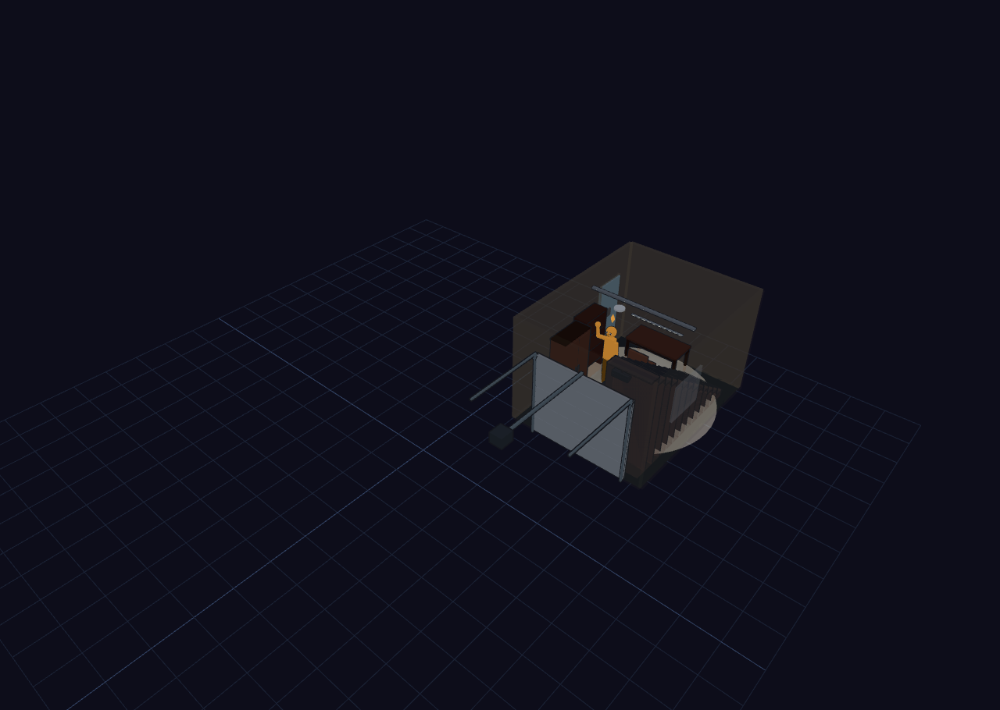
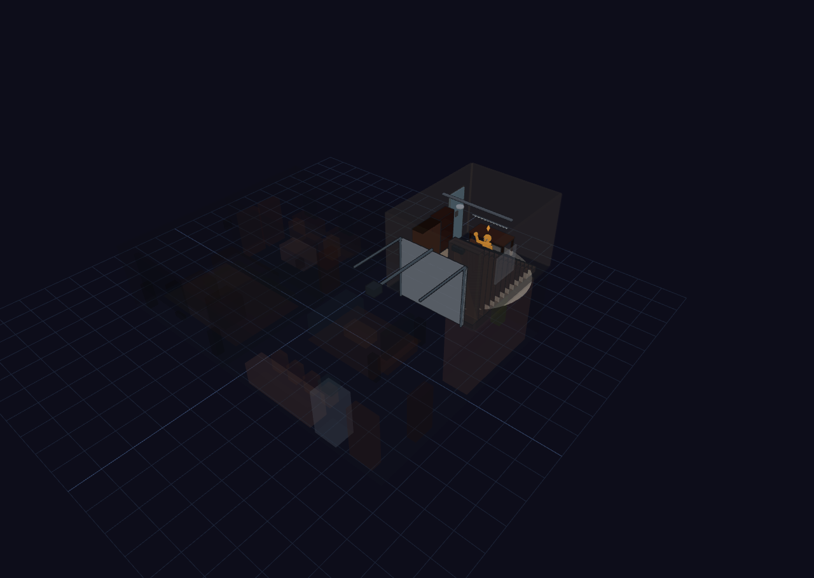

The Bunker — Underground Hangout
Explore it live above, or import the JSON in Diorama under Settings ▸ Data ▸ Configurations ▸ Import.
~112 m² basement + ~13 m² shed · 2 floors · 4 rooms · after-dark hangout
The house is beside the point — this plan is about what is UNDER the yard. At
grade there is only a modest single-bay shed/garage: a bay door, a side door, a
workbench, tool shelves and a parts cabinet. In the corner of it, a stair drops
into a 12.8 × 8.6 m concrete bunker that fills the whole lot, and that is where
everyone actually is. Store.floors order puts the basement FIRST (index 0 is the
lowest story) and a single stairLinkId pairs the two flights at the same world
position, so avatars really do transit between the levels.
HOME THEATER (south-west) — a full projection wall with a wall-mounted screen,
centre channel, two tower speakers, a subwoofer, and rear bookshelf surrounds
mounted high on the back wall. Two front-row recliners sit on the floor; a
three-seat recliner row rides a 220 mm riser platform behind them (the riser is
walkable terrain, so avatars climb up to their seats). Magenta and violet cove
strips wash the walls.
ARCADE / GAME ZONE (north-west) — two upright arcade cabinets against the west
wall under a cyan neon run, a foosball table under a warm pendant, a game shelf,
and two battlestations (desk + chair + monitor) along the back wall under a green
LED string.
BUNKER LOUNGE (east) — a 3 m bar with four stools, a bar fridge with an
over-counter microwave and a glassware cabinet, all lit by violet under-shelf LEDs
and an orange rail strip. The seating half has an L-facing sofa, coffee table, a
wall TV on a stand flanked by tower speakers, a vinyl-record shelf, two lava
lamps, and the stair up to the shed under a magenta sconce.
LIGHTING — the scene runs at the `night` preset with glass-house OFF and wall
cutaway ON, so the camera can see into the bunker while the neon carries the
whole room. Every light is UNBOUND with localState "on", so nothing needs Home
Assistant. Demo AI presences live in each of the three basement rooms (confined to
their room), plus three free-range roamers downstairs and one in the shed.
The Bunker
3 rooms · 140 m² footprint


Shed (grade)
1 room · 140 m² footprint


Glass-house overview
